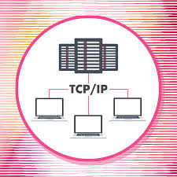

TCP/IP (Transmission Control Protocol / Internet Protocol) is a set of communication protocols that defines how data is transmitted over the internet. TCP is a transport layer protocol that ensures reliable, ordered, and error-checked delivery of data packets between applications and the IP network.
Think of TCP/IP like a postal system — IP is the addressing system that gets your letter to the right house, while TCP makes sure the letter actually arrives, in the right order, and nothing is missing. Every device connected to the internet uses TCP/IP to communicate.
💡 Did you know? TCP/IP was developed in the 1970s by
Vint Cerf and Bob Kahn, who are often called
the "Fathers of the Internet."